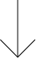

more about me
hi, i'm claire.
i’m 18 and i am currently studying mutimedia and internet technologies. open-minded & dynamic, i’m available for new creative projects.
my educational background
during highschool, i chose an applied arts baccalaureate, it allowed me to learn a lot about layout and design principles. i’m really interested into communication and graphism. i love to create contents for social networks, whether it is photography, engaging posts, visual identity...
for as long as i can remember, i’ve always loved to create things. during my childhood, i started taking drawing lessons and quickly discovered a passion for painting. when i had my first camera, filming and taking pictures became part of my daily life.
my skills
i work mainly with the adobe suite, as photoshop, indesign, illustrator, XD, premiere pro... doing a regular monitoring helps me to stay informed about social networks trends, in this way i can create and manage accounts on social medias as Instagram, Facebook, TikTok...